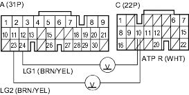

- Turn the ignition switch ON (II).
- Observe the A/T gear position indicator and shift each position separately.
Do any indicators stay on when the shift lever is not in that position?
YES - Go to step 3.
NO - Turn the ignition switch OFF, then go to step 4.
- Disconnect the transmission range switch connector.
Do all gear position indicators go out?
YES - Replace the transmission range switch. 
NO - Turn the ignition switch OFF, then go to step 5.
- Test the transmission range switch (see page 14-350).
Is the switch OK?
YES - Go to step 5.
NO - Replace the transmission range switch.
- Connect the transmission range switch connector.
- Turn the ignition switch ON (II).
- Shift to any position other than

- Measure the voltage between PCM connector terminals C10 and A23 or A24.
PCM CONNECTORS

Wire side of female terminals
Is there battery voltage?
YES - Go to step 9.
NO - Check for short in the wire between PCM connector terminal C10 and the transmission range switch or A/T gear position indicator and check for an open in the wires between PCM connector terminals A23 and A24 and body ground (G101). If the wires are OK, check for loose terminal fit in the PCM connectors. If necessary, substitute a known-good PCM and recheck.